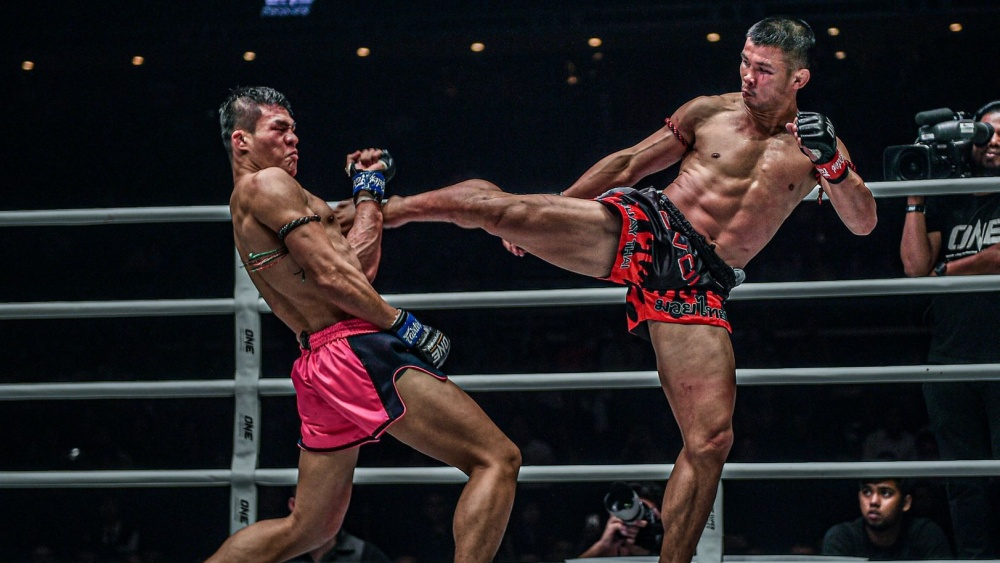
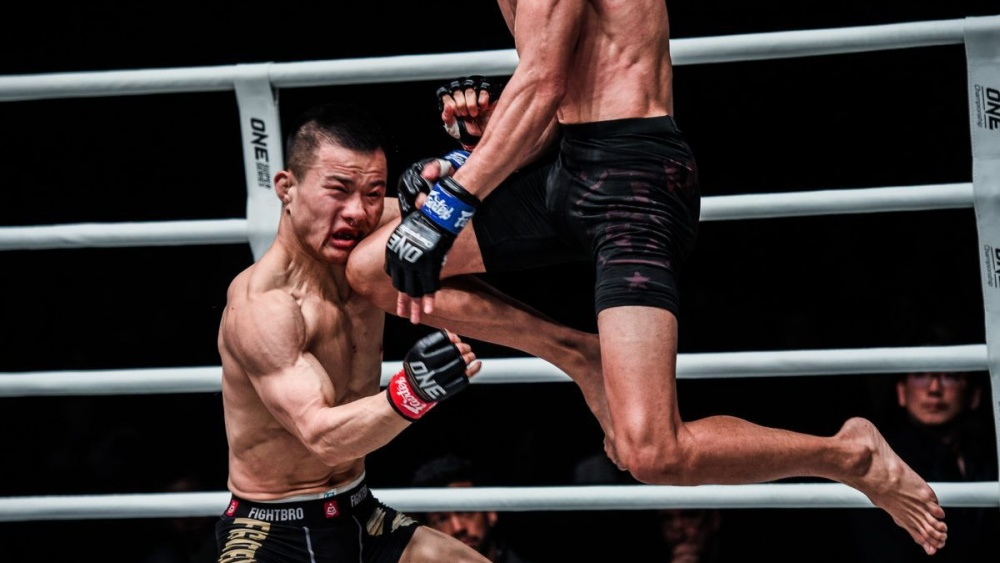
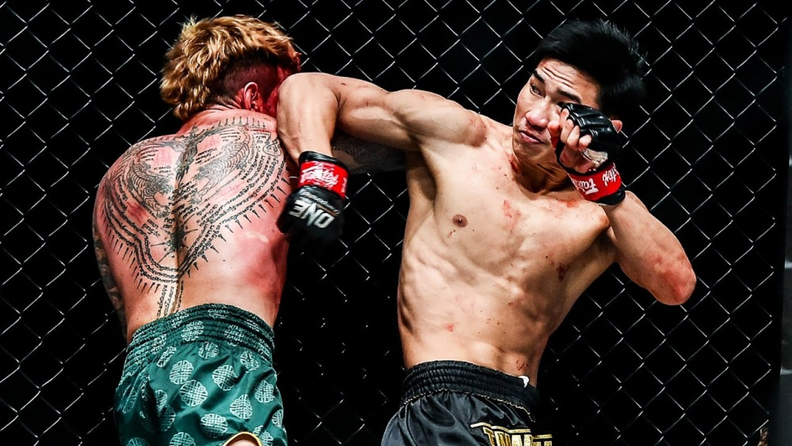

The Arsenal.
Mastering the art of eight limbs requires drilling these foundational strikes until they become muscle memory. Here are the most famous weapons in a Nak Muay's arsenal.
THE TEEP
(PUSH KICK)
Often called the "foot jab" of Muay Thai. The Teep is a defensive and offensive tool used to manage distance, disrupt an opponent's rhythm, or forcefully push them back. A well-timed Teep to the solar plexus can easily knock the wind out of an advancing fighter.
THE TAE
(ROUNDHOUSE KICK)
Unlike karate or taekwondo kicks that snap from the knee, the Muay Thai roundhouse is swung like a baseball bat. Fighters rotate their hips, pivot on their lead foot, and smash their solid shin bone directly into the opponent's ribs, legs, or head.


THE PLUM
(CLINCH)
The clinch is a grueling, close-quarters grappling battle unique to Muay Thai. Fighters lock arms around each other's necks and shoulders, fighting for dominant inside control to deliver devastating knees to the ribs and slashing elbows to the head, or to sweep the opponent to the canvas.
KAO LOY
(FLYING KNEE)
One of the most spectacular and dangerous strikes in combat sports. The fighter launches themselves off the ground, driving their lead or rear knee upwards into the opponent's chest or chin. It is a high-risk, high-reward move often used to close distance aggressively.


SOK GLAB
(SPINNING ELBOW)
A deceptive, lightning-fast strike. By stepping across and spinning blindly, the fighter generates massive rotational force, landing the point of the elbow flush on the opponent's jaw or temple. It is famously used to catch aggressive opponents off-guard as they step in.